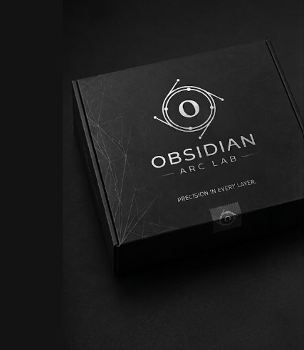

— THE PRINTING ATELIER
Obsidian Arc Lab is a premium 3D printing atelier focused on precision, craftsmanship, and futuristic product creation.
— OUR PHILOSOPHY
Every creation begins as an idea and becomes a physical object through precision-engineered additive manufacturing. From sacred statues to anime collectibles and personalized keychains, each piece is crafted with attention to detail, proportion, material, and finish.

— THE PROCESS
We understand the idea, purpose, size, colour and final use of the product.
The object is prepared, adjusted and optimized for clean 3D printing.
Printed with precision using Bambu Lab A1 and premium filament materials.
Final checking, cleaning, detailing and packaging before delivery.
— MATERIAL LIBRARY
Strong, clean and reliable for detailed everyday products.
Glossy premium finish, ideal for statues and display pieces.
Soft luxury texture with a modern minimal visual finish.
Natural sculptural appearance for artistic and sacred objects.
— CUSTOM WORK
We transform concepts into custom 3D printed products for gifts, display, events, business use and personal collections.
START A COMMISSION